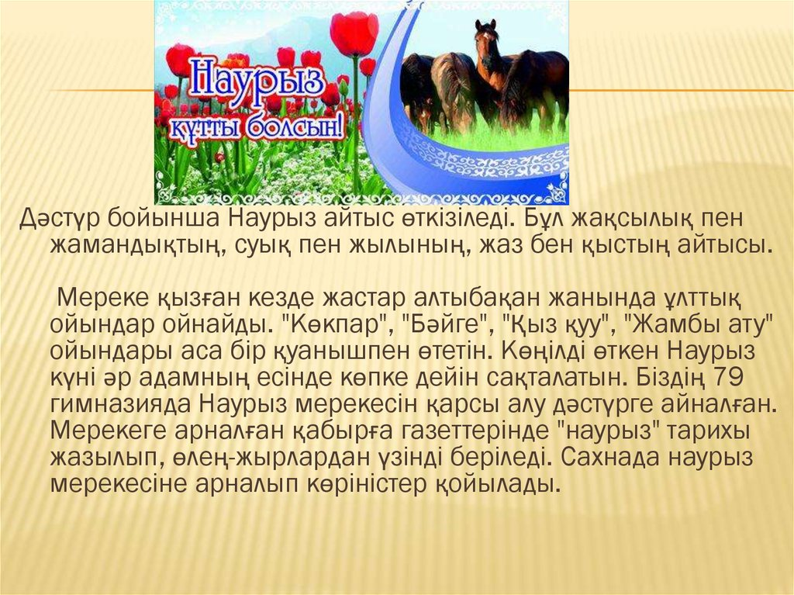
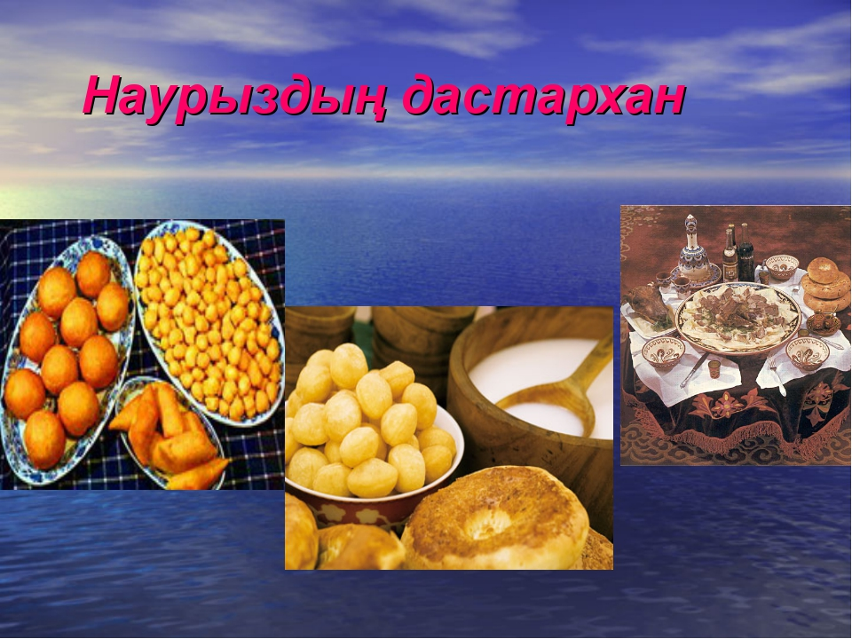
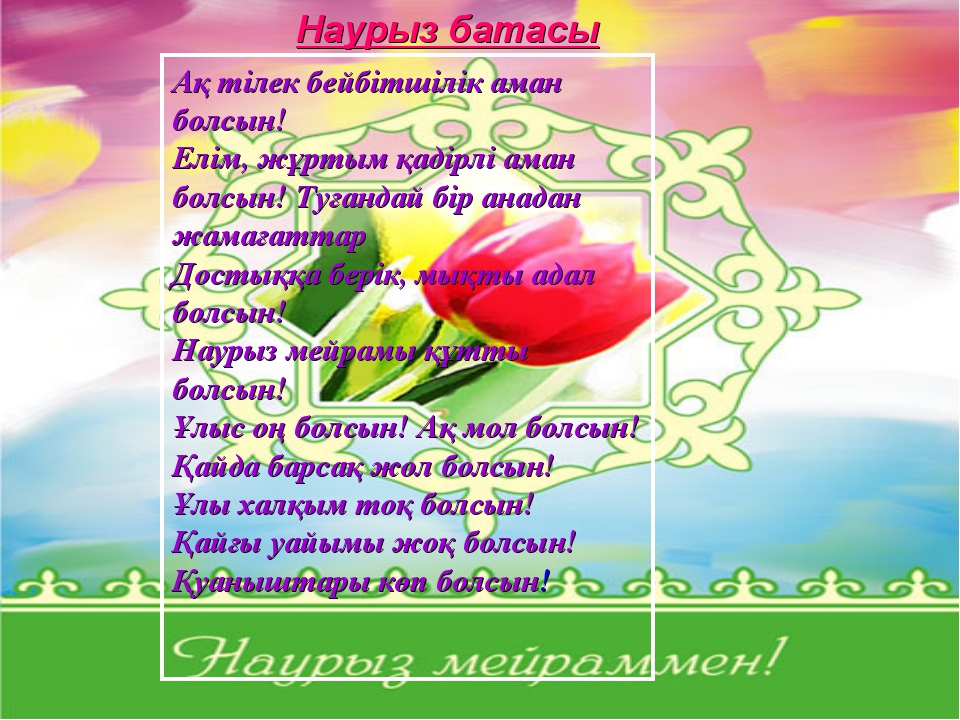

Діни мейрамдар. Ораза айт, құрбан айт
Жалпы халықтық тойлар. Наурыз мейрамы, Қымызмұрындық, Сабантой (мизам), Соғым басы.
Кәсіптік мейрамдар. Биебайлау, сіргежияр, жүн қырқар, тулақшашар, күйек
байлау, шашыратқы, уызқағанақ және т.б.
Қазақтың төрт тойы.
Наурыз мейрамы – күн мен түн тепе – теңдікке келген сәттен бастап тойланады. Наурыз мерекесінде көпшілік бұлақтардың көзін ашып, тал егіп, игілікті жұмыстар атөарады. Бұл кезде мал төлдеп, жер көктеп, дүние жаңара бастайды. Сондықтан да наурыз тойын «тепетеңдік», «игілік», «жаңару», мейрамы деп атайды..
Қымызмұрындық – жаз тойы болып, мамыр айынан бастап маусым айына созылатын үлкен той. Осы кезде мал отығып, биелер желіге байланып, қымыз жиналып, ағайын – жекжаттар бірін – бірі қымызға шақырады. Құран оқып, мал сойылып, түрлі ойын – сауықтар, жарыстар ұйымдастырылады. Осы кезде түрлі той- томалақтар да өткізіледі.
Мизам (Сабан той) Күз айында диқандар мен бағбандардың құрметіне арналған той. Бұл тойда түрлі жарыстар мен ойын – сауықтар өткізілді.
Соғым басы – қыс тойы болып алғаш рет қар жауып аяз түскен сәттен басталады. Осы кезде ауыл адамдары соғымға сақтаған малдарын сойып, бірін – бірі қонаққа шақырады. қыстың ұзақ түнінде ақындар мен жыршылар терме, қисса, ертегі айтып, жұртты қызыққа батырады.
Дәстүрлі үйлену тойы.
Қыз таңдау. Бойжеткеннің тал бойынан табылуға тиіс қасиеттер бағаланған соң, жігіттің қасындағылар оның әке – шешесіне сездіреді.
Қыз айттыру. Жігіт әкесі қыз үйінің төріне қамшысын іліп, «қызыңның қарғы бауына » деп бір жорға байлатады. Бойжеткенге үкілі тақия, сырға, сақиналар сыйланады.
Жаушы жіберу. Жаушы шалбарының бір балағын етігінің қонышына сыртына шығарып, екініш балағын қонышқа сұғындырып, ақ түсті атқа мініп, қыздың үйіне келіп, «қарағым көрпе сал» деп бұйырады. Қыз үйі жаушыға «шеге шапан» кигізеді.
Құда түсу тойы. Жігіттің туған – туысқандары құдалыққа қыз апуылына барады. Мал сойылып, оның бауыздау қанына құдалар қол батырып, бата бұзбауға серттеседі. Құйрық – бауыр жегізу, құда тарту, ұн жағу т.б. орындалады.
Есік – төр көрсету тойы. Қыздың туған – туысқандары жігіт ауылына қарсы тойға барады. Құда түсу тойындағы кәделер қайталанады
Ұрын той. Күйеу баланың қалындығымен кездесуіне мүмкіндік туғызу үшін ұрын той өткізіледі. Ентікпе, шатыр байғазысы, балдыз көрімдігі, қыз қашар, күйеу қашырар, желі тартар, ит ырылдар, бақан саларо, үйге кірер,кемпір өлді, шымылдық ашар, төсек салар, қыз құшақтатар, шаш сипар,
көрпе қимылдатар кәделері алынады.
Қыз ұзату тойы. Ат байлар,құдай жолы, шаңырақ көтерер, уық шаншар, туырлық жабар, түндік жабар, отау байғазысы кәделері алынады.Қыз бен жігіт ақ отауда оңаша кездеседі. Некесіқиылады.Түрлі ойын – сауық өткізіледі, жар – жар айтылады.Қыз аттанарда «сыңсу» айтады
Келін түсіру тойы. «Беташар» айтылады. Той негізінен қыз ұзату тойымен бірдей өткізіледі.


